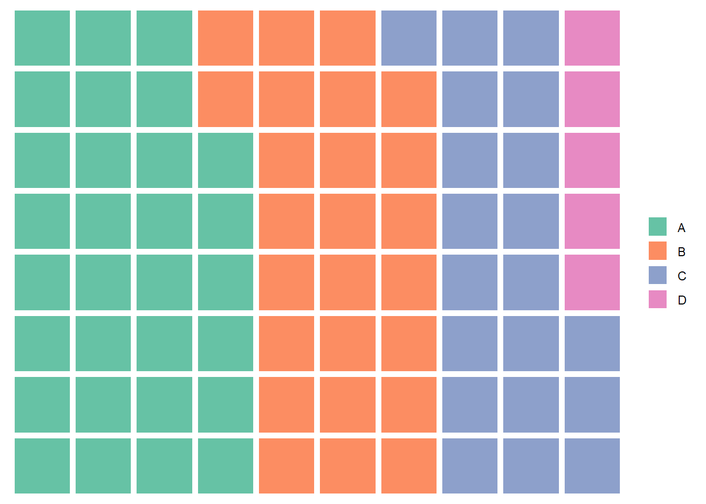
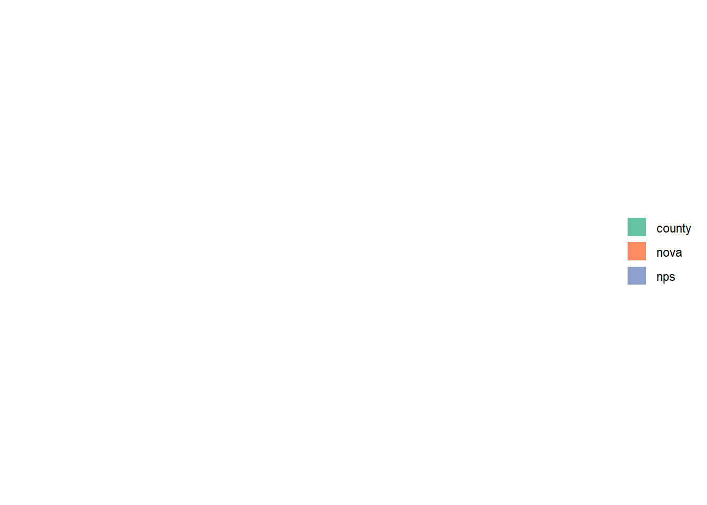
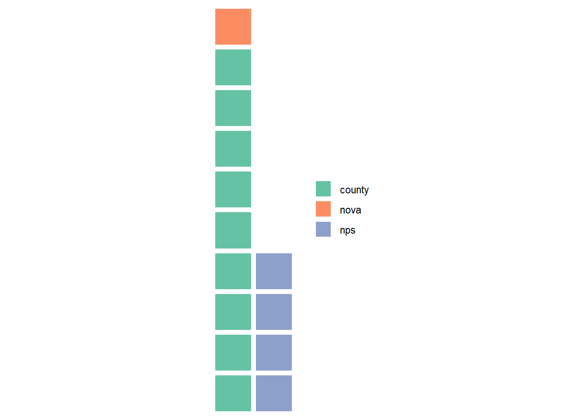
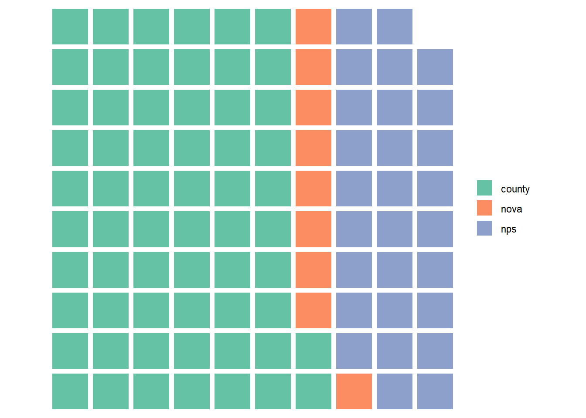
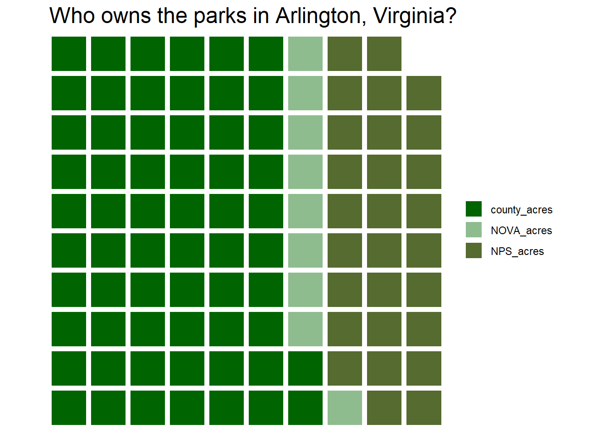

library(waffle)
library(tidyverse)30 Day Chart Challenge -Arlington Parks
R
R-code
Code-Along
Waffle
30DayChartChallenge
Who Owns the Parks in Arlington Virgina?
When I looked at Twitter this morning, my feed was filled with amazing charts. Apparently, April is month for the #30DayChartChallenge. More info can be found at the challenge’s Github page. Each day, the challenge specifies a type of chart, but not a dataset. Today’s challenge is to create a waffle chart. I’d never heard of a waffle chart, but luckily, R has a package for that!
Keeping it simple and just using tidyverse and waffle packages today. (Spoiler, I had incredible difficulties with this package.)
A waffle chart is similar to a pie chart, but since it is constructed from squares, instead of wedges, it is a bit easier to correctly judge the relative areas.
I discovered that Arlington County has a website with a bunch of open source data, so I poked around there to find a dataset for today’s challenge. I decided to use the dataset on parks and acreage. In addition to having local and federally owned parks, Arlington is park of a consortium of Northern Virginia jurisdictions that also operate regional parks.
parks <- read_csv("parks.csv")Rows: 10 Columns: 6
── Column specification ────────────────────────────────────────────────────────
Delimiter: ","
dbl (6): Profile Year, County Owned Parkland (Acreage), NOVA Parks (Acreage)...
ℹ Use `spec()` to retrieve the full column specification for this data.
ℹ Specify the column types or set `show_col_types = FALSE` to quiet this message.The dataset contains 3 years worth of data (2019-2021) and the total number of acres owned by the county, NOVA parks, and the National Park Service. It also includes the number of parks own by NOVA parks and the county, but not the number of NPS parks. I did try to find the number of NPS parks and the answer isn’t easily obtainable. The NPS owns one park in Arlington (Arlington House), but there are a couple of multi-state trails that might go through the county, but I wasn’t interested in pulling up maps to check.
The dataset comes as an excel sheet and the column names aren’t nice. I’ve been working with so many datasets designed for R or SQL that it was a shock to see long column names with spaces and punctuation. I had to look up how to handle that! The answer is backticks, as below.
parks_2021 <- parks %>%
filter(`Profile Year` == 2021)I’m going to rename the columns and in this filtered dataset. There isn’t much year to year change in this dataset (there is one extra park in 2020), so I’m not going to do anything with the entire dataset. If I were, I’d rename the parent dataset.
parks_2021 <- parks_2021 %>%
transmute(year = `Profile Year`,
county_acres = `County Owned Parkland (Acreage)`,
NOVA_acres = `NOVA Parks (Acreage)`,
NPS_acres = `National Parks Service (Acreage)`)
parks_2021 <- parks_2021 %>%
select(-year)Now let’s get waffling!
Allegedly, you can both pass waffle dataframes or use the provided geom_waffle, but neither was successful for me. With respect to the geom_waffle, I found a suggestion to install waffle from the github repo and restart R Studio, but that didn’t work for me. Others stated that re-installing R Studio fixed the problem, but my commitment to waffle charts is not that great.
As to passing it dataframes, waffle constantly complained about 'list' object cannot be coerced to type 'double' even when using code from other folk’s tutorial. Passing waffle a simple vector did work.
# Vector
x <- c(30, 25, 20, 5)
# Waffle chart
waffle(x, rows = 8)
So, I converted my dataframe to a vector. First, I reshaped it to long rather than wide. (Neither the long nor the wide df waffled.)
parks_2021_long <- pivot_longer(parks_2021, cols = 1:3, names_to = "owner", values_to = "acreage")Then I converted it to a vector. This should be a named vector of numbers.
parks_2021_vec = deframe(parks_2021_long)
class(parks_2021_vec)[1] "numeric"print(parks_2021_vec)county_acres NOVA_acres NPS_acres
924 136 417 str(parks_2021_vec) Named num [1:3] 924 136 417
- attr(*, "names")= chr [1:3] "county_acres" "NOVA_acres" "NPS_acres"Let’s waffle it. When I first waffled it, I got 4 categories instead of 3. I found an example that said you needed to explicitly pass it 3 colors or else it would fill in the blank space with a 4th color. Then you get the correct labels, but no chart!
#This waffles, it seems like nonsense to me
waffle(parks_2021_vec, colors = c("#FFC0CB", "#FFC0AB", "green"))So now we reached the sad state of affairs where I type in the values to make this work. And that also does not work.
x <- c(county = 924, nova = 136, nps = 417)
# Waffle chart
waffle(x , rows = 10)
Small numbers work
y <- c(county = 9.24, nova = 1.36, nps = 4.17)
# Waffle chart
waffle(y , rows = 10)
If I convert everything to percentages…
total = 924 + 136 + 417
y <- c(county = (924/total)*100, nova = (136/total)*100, nps = (417/total)*100)
# Waffle chart
waffle(y , rows = 10)
I don’t find any documentation about the size of the numbers. It is not a requirement that the totals must add up to 100 (100%); small numbers adding up to anything works. Waffle charts are not only for proportional data, but can also be used to track progress. There is nothing in the documentation on CRAN that gives a clue about this, nor did I see anything in the tutorials I looked at.
I’m going to pretty up the chart and call it a day. I thought this would take me about 20 minutes to make a nice chart and instead I’ve spent several hours and I don’t even understand what went wrong. Also, the named vector does work when I adjust the size of the numbers to “smaller” values. I picked nice forest colors since we are talking about parks.
parks_2021_percent = (parks_2021_vec / total) * 100
waffle(parks_2021_percent, colors = c("darkgreen", "darkseagreen", "darkolivegreen"), title = "Who owns the parks in Arlington, Virginia?")
I don’t really understand the waffle package. I don’t find the graphic particularly understandable. I’d like there to be some sort of indication about what each square represents. And I find it very annoying that there are not 100 squares. I know this is a rounding issue, but given that the dataset, by the nature of how it was created, should equal 100%, the chart is just confusing. And for what it is worth, I had to repeatedly restart RStudio, because code chunks would just fail to do anything. They’d run, but there would be no output, not even warnings or errors.
Citation
BibTeX citation:
@online{e.sinks2023,
author = {Louise E. Sinks},
title = {30 {Day} {Chart} {Challenge} {-Arlington} {Parks}},
date = {2023-04-02},
url = {https://lsinks.github.io/posts/2023-04-02-chart-challenge-2/parks},
langid = {en}
}
For attribution, please cite this work as:
Louise E. Sinks. 2023. “30 Day Chart Challenge -Arlington
Parks.” April 2, 2023. https://lsinks.github.io/posts/2023-04-02-chart-challenge-2/parks.